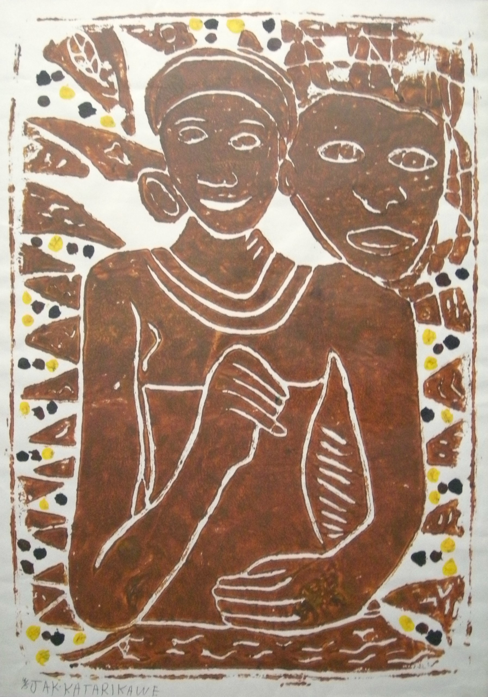

Jak Katarikawe
1940–2018
Artist Biography
Jak Katarikawe was born in Kigezi in South West Uganda. He never attended school, remained largely illiterate and was a largely self-taught artist. However, with his mother he worked from an early age decorating in traditional imagery houses in Kigezi. In the early 1960s he became a driver for a professor at Makerere University in Tanzania, who, on seeing some sketches by Katarikawe introduced him to Sam Ntiro, a senior art lecturer at the university. He then attended art classes for some time before dropping out. After a number of exhibitions in Uganda and elsewhere, Katarikawe was taken up by the Gallery Watatu in Nairobi and his paintings gained rapid recognition. Sometimes likened to Chagall in their dreamy imagery, his work has been exhibited widely internationally, including solo exhibitions in London in 1975 and Beijing in 2009. There was a major retrospective in Frankfurt, Germany in 2002 and another in Nairobi in 2014.

Untitled